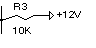
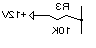
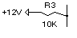
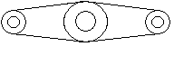

|
Mirror Method |
Creates a mirror-image copy of a planar object around an axis.
Signature
RetVal = object.Mirror(Point1, Point2)
Object
All Drawing Objects
The object this method applies to.
Point1
Variant (three-element array of doubles); input-only
The 3D WCS coordinates specifying the first point of the mirror axis.
Point2
Variant (three-element array of doubles); input-only
The 3D WCS coordinates specifying the second point of the mirror axis.
RetVal
Mirrored object
This object can be one of any Drawing Objects.
System Variables
To manage the reflection properties of text objects, use the MIRRTEXT system variable. The default setting of MIRRTEXT is On (1), which causes text objects to be mirrored just like any other object. When MIRRTEXT is off (0), text is not mirrored.
 |
 |
 |
| Before mirroring | After mirroring (MIRRTEXT = 1) |
After mirroring (MIRRTEXT = 0) |
Remarks
The two points specified as parameters become the endpoints of a line around which the base object is reflected.
|
|
|
|
 |
|
This method places the reflected image into the drawing and retains the original object. To remove the original object, use the Delete method.
You can mirror a Viewport object in paper space, although doing so has no effect on its model space view or on model space objects.
AutoCAD checks to see if the object to be copied owns any other object. If it does, it performs a copy on those objects as well. The process continues until all owned objects have been copied.
NOTE You cannot execute this method while simultaneously iterating through a collection. An iteration will open the work space for a read-only operation, while this method attempts to perform a read-write operation. Complete any iteration before you call this method.
AttributeReference: You should not attempt to use this method on AttributeReference objects. AttributeReference objects inherit this method because they are one of the drawing objects, however, it is not feasible to perform this operation on an attribute reference.
| Comments? |